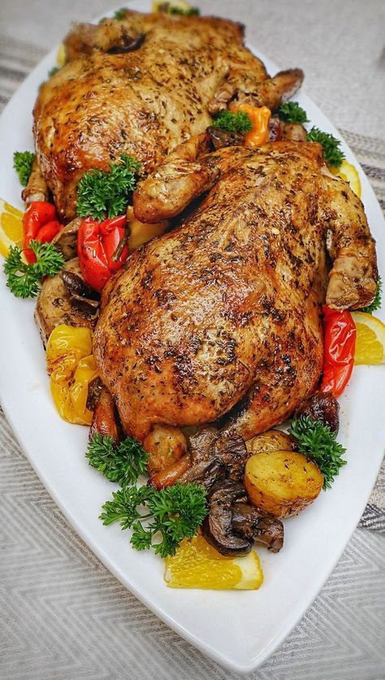

Onja ladha halisi ya chakula cha Tanzania
Ladha halisi ya chakula cha kitanzania katika mazingira bora na ya kisasa.
Chakula Fresh
Chakula bora kwa ajili yako na familia yako
Vyakula vyetu vinatayarishwa kila siku kwa bidhaa kutoka shambani.
Wapishi Bingwa kutoka Tanzania
Tuna wapishi wengi wenye uzoefu wa miaka mingi katika mapishi ya asili na ya kigeni.
Huduma ya haraka
Huitaji kusubiri sana, oda yako inafika mezani kwa wakati au kuletewa popote ulipo ndani ya tanzania
Weka oda sasa
Kuhusu Dipo Restaurant
Dipo Restaurant ni mgahawa wa kisasa hapa Dar es salaam
Mgahawa wa Dipo ulianzishwa 2020 kwa lengo la kuleta ladha halisi za kitanzania katika mazingira ya kisasa.Tunajivunia kutumia viungo asilia kutoka kwa wakulima wetu
ORODHA YA VYAKULA
MENU

Wali Samaki
Wali mzuri uliopikwa kwa ustadi na samaki wa maji baridi.
TSH 15,000
nyama choma
nyama zilizo chomwa na kukaushwa kwa ustadi wa juu ni nyama ya ng'ombe laini.
TSH 20,000
ugali nyama choma
ugali wenye ladha nzuri na nyama iliyo chomwa na kukaushwa vizuri.
TSH 18,000
chipsi kuku
chipsi kavu na kuku choma wa kienyeji aliyekolea viungo.
TSH 15,000
ndizi rosti
ndizi zilizo pikwa na vitu vya uhalisia kutoka shambani.
TSH 15,000
ugali kuku
ugali wa mahindi bora kutoka shambani na kuku wa kienyeji.
TSH 10,000
kisinia
pata kisinia chenye mchanganyo wa ladha halisi ya nyumbani.
TSH 40,000
kuku
pata kuku mzima wa kienyeji aliyekolea viungo na kukaushwa vizuri.
TSH 30,000